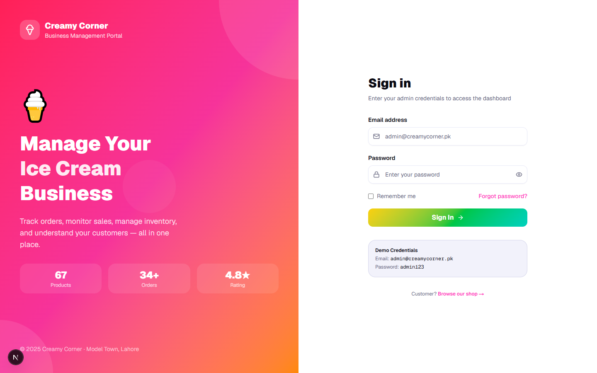
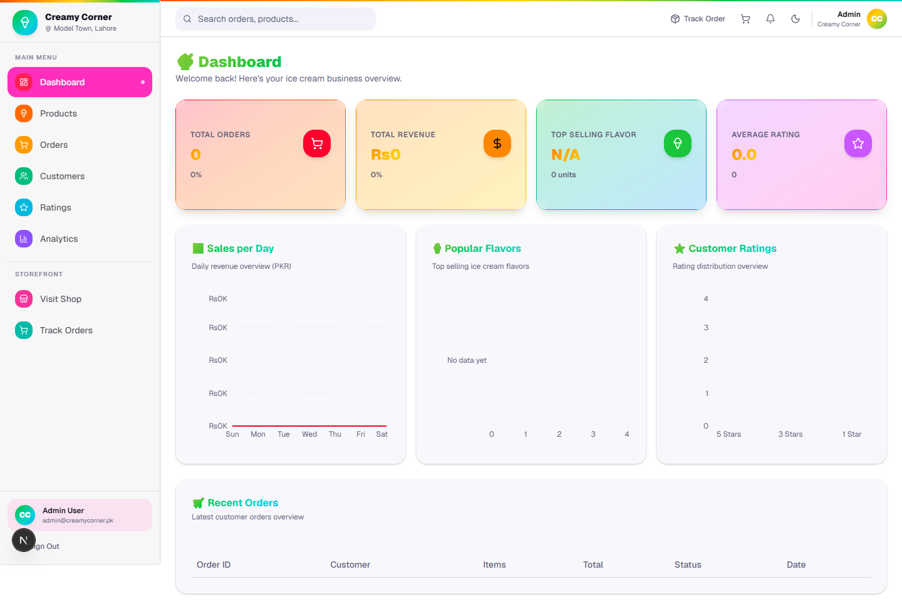
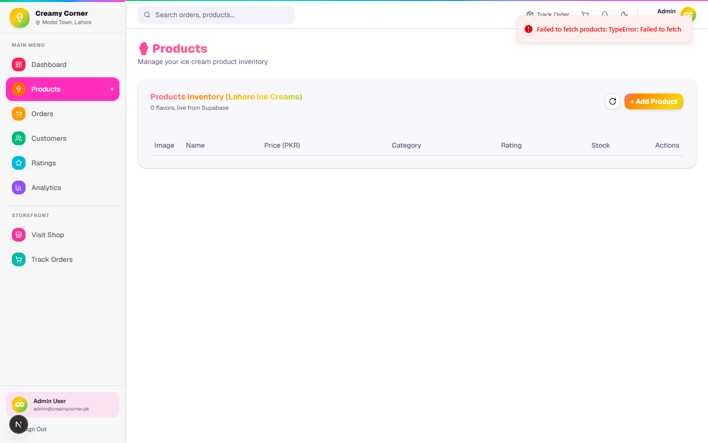
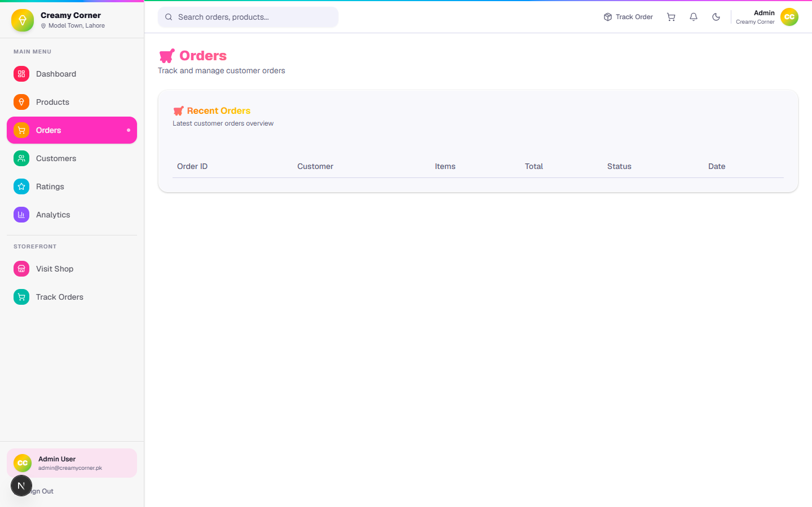
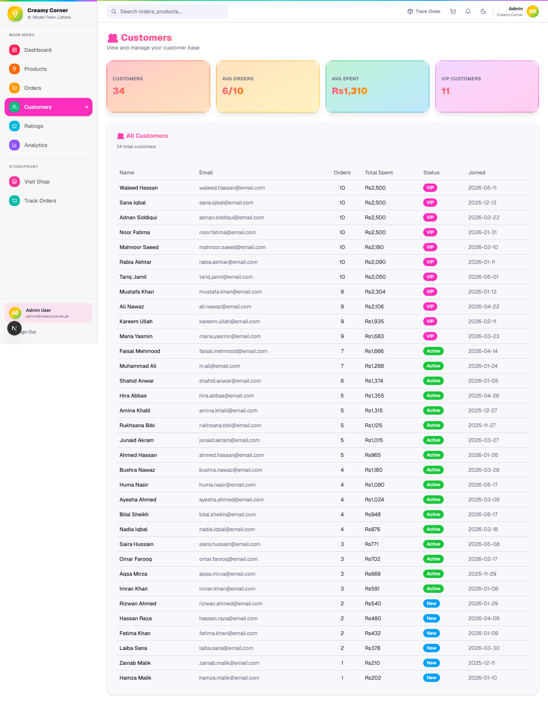
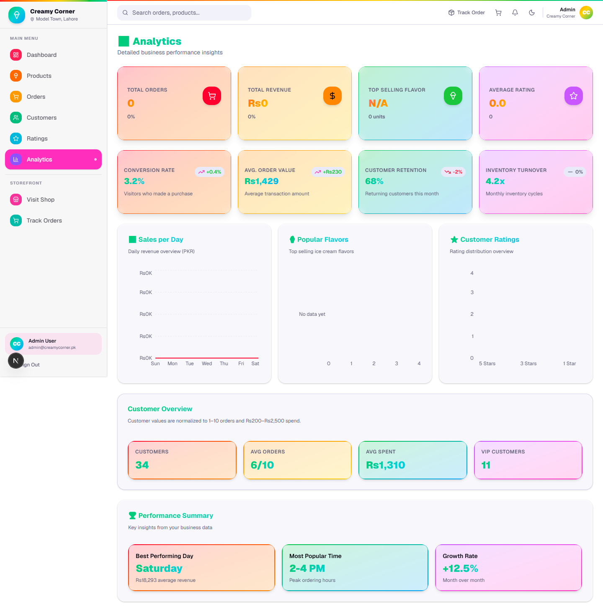
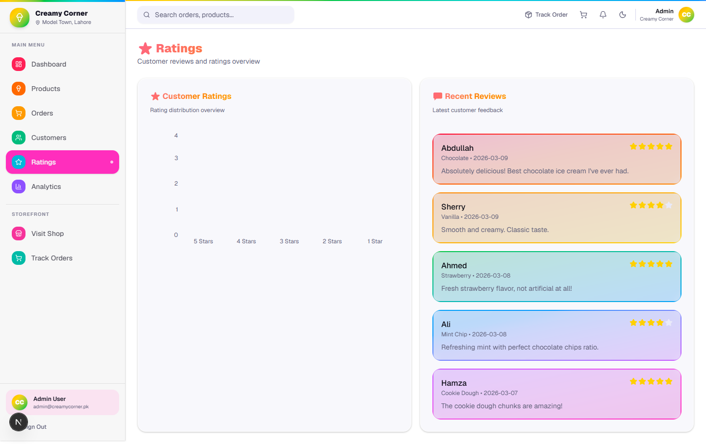
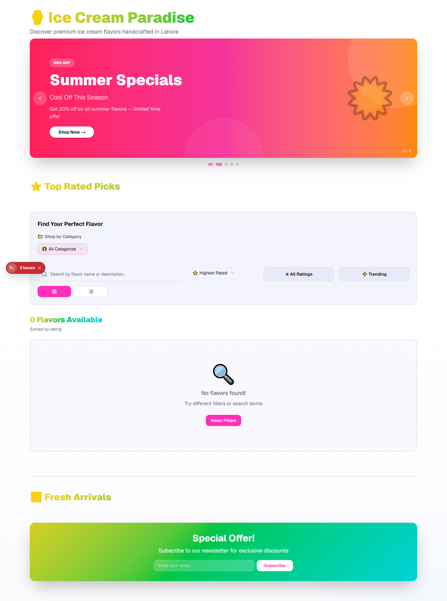
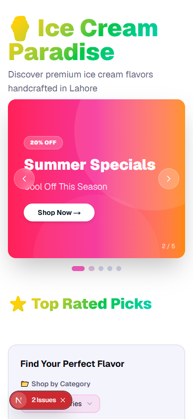
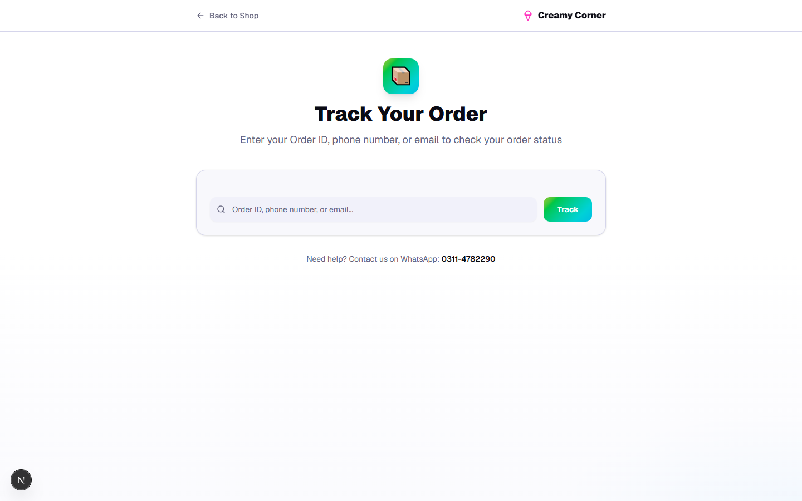

COMSATS University Islamabad, Lahore Campus
Department of Computer Science
Web Technologies — 5th Semester (BS) SP24
| Project Title | Ice Cream E-Commerce & Business Management Platform |
| Group Members | Sheheryar Altaf, Abdullah Sajjad |
| Course Code & Title | Web Technologies |
| Semester / Session | Spring 2024 (SP24) |
| Section | C (Sheheryar Altaf) / A (Abdullah Sajjad) |
| Course Instructor | Rana Ajmal |
| Submission Date | May 2025 (Final) |
| # | Full Name | Roll No | Mobile | |
|---|---|---|---|---|
| 1 | Sheheryar Altaf | FA22-BCS-043 | fa22-bcs-043@cuilahore.edu.pk | 03026603332 |
| 2 | Abdullah Sajjad | FA22-BCS-041 | fa22-bcs-041@cuilahore.edu.pk | 03174003331 |
Group Leader: Sheheryar Altaf — FA22-BCS-043
| Business Name | Creamy Corner Ice Cream |
| Type of Business | Ice Cream Retail Stall |
| Industry / Sector | Food & Beverage |
| Business Address | Model Town, Lahore, Pakistan |
| Website | https://creamy-corner-web.vercel.app |
| Years in Operation | 4 years |
| Approx. Employees | 5 |
| Full Name | Muhammad Bilal |
| Designation | Owner / Manager |
| Mobile | 0311-4782290 |
| creamycorner.lhr@gmail.com | |
| Communication |
We found the client through a family connection. Creamy Corner is a well-known ice cream stall in our neighbourhood in Model Town, Lahore. The business had no digital presence and was managing all orders and customer records manually. We approached the owner, explained the benefits of an online storefront and business dashboard, and he agreed to work with us.
No formal written contract was signed. A verbal scope agreement was made covering the features listed in Section 4.
| Total Amount Charged | Rs. 10,000 |
| Amount Received | Rs. 5,000 |
| Pending Amount | Rs. 5,000 (on final delivery) |
| Mode of Payment | JazzCash |
| Live URL | https://creamy-corner-web.vercel.app |
| Hosting Platform | Vercel (Free Tier) |
| Domain Owner | Student account |
| Project Title | Ice Cream E-Commerce & Business Management Platform |
| Industry | Food & Beverage Retail |
| Category | E-Commerce / Business Dashboard |
| Target Audience | Ice cream customers (online shoppers) and the business owner (admin) |
| Project Status | 100% Complete — Deployed & Live |
Creamy Corner is a Lahore-based ice cream stall that had no digital presence, managing all sales and customer records manually through pen-and-paper. Our platform delivers a full-stack e-commerce and business management system with two distinct sides.
On the customer side, shoppers can browse a catalog of 67 ice cream products across five categories — Kulfi, Cone, Sundae, Takeaway, and Specialty — search and filter by flavor or rating, add items to a persistent shopping cart, complete checkout with delivery details, and track their order status in real time. An order confirmation screen provides a one-tap WhatsApp button to notify the shop owner.
On the business side, the owner logs into a protected admin dashboard displaying live KPIs: total orders, total revenue, top-selling flavor, and average product rating, alongside visual charts for daily sales, popular flavors, and rating distributions. Dedicated modules for orders management (with CSV export), customer analytics with VIP classification, product inventory, and reviews are included. A dark/light mode toggle is available for comfort.
| Frontend Framework | Next.js 15 (App Router) + React 19 + TypeScript 5.7 |
| Frontend UI Library | Tailwind CSS 4.2 + shadcn/ui (Radix UI primitives) |
| Backend | Next.js Route Handlers (TypeScript) — serverless API at /api/orders |
| Database | Supabase — PostgreSQL (cloud-hosted) |
| ORM / Client | Supabase JS Client v2 (direct query builder) |
| Authentication | Session-based admin login (localStorage + hardened credentials) |
| Real-time | Supabase Realtime channels (postgres_changes events) |
| Theme System | next-themes v0.4 — class-based dark/light mode |
| Other Libraries | Recharts 2.15, React Hook Form 7.54, Zod 3.24, Sonner 1.7, Embla Carousel 8.6, Lucide React 0.56, Vercel Analytics 1.6 |
| Deployment | Vercel (Free Tier) — https://creamy-corner-web.vercel.app |
| Version Control | Git — GitHub (https://github.com/sheheryaraltaf/creamy-corner) |
| GitHub Repository | https://github.com/sheheryaraltaf/creamy-corner |
| Branch | main |
| Live Frontend (Shop) | https://creamy-corner-web.vercel.app/shop |
| Live Admin Dashboard | https://creamy-corner-web.vercel.app/ |
| Admin Login Page | https://creamy-corner-web.vercel.app/login |
| Order Tracking | https://creamy-corner-web.vercel.app/track-order |
| API Endpoint | POST https://creamy-corner-web.vercel.app/api/orders |
| Collaborator Added | rana.ajmal@gmail.com — read access confirmed |
| Role | URL | Password | |
|---|---|---|---|
| Admin | /login | admin@creamycorner.pk | admin123 |
| Customer | /shop | Guest checkout — no account needed | |
Prerequisites: Node.js v20+, npm v10+, Git
1. git clone https://github.com/sheheryaraltaf/creamy-corner.git
2. cd ice_cream && npm install
3. Create .env.local:
| NEXT_PUBLIC_SUPABASE_URL | https://glvwigmaalustyxudijz.supabase.co |
| NEXT_PUBLIC_SUPABASE_ANON_KEY | eyJhbGciOiJIUzI1NiIsInR5cCI6IkpXVCJ9... (see .env.local) |
4. npm run dev → open http://localhost:3000
| # | Title | Description | Priority |
|---|---|---|---|
| 1 | JazzCash / Easypaisa Payment Gateway | Integrate mobile wallet payments at checkout, replacing Cash-on-Delivery. A payment webhook auto-updates order status in Supabase. | High |
| 2 | SMS Order Notifications (Twilio / Jazz SMS) | Send SMS to customers at each order stage: Confirmed → Preparing → Out for Delivery → Delivered. Reduces support queries significantly. | High |
| 3 | Admin Product CRUD with Image Upload | Full product management UI — add/edit/delete products with image uploads to Supabase Storage, enabling the non-technical owner to manage the catalog independently. | Medium |
| 4 | Loyalty Points & Coupon Codes | Each purchase earns points redeemable for discounts. A coupon-code engine at checkout supports percentage or flat-discount rules — all managed from the admin panel. | Medium |
| 5 | Customer Accounts & Order History | Allow customers to register, log in, and view past orders — eliminating the need to track orders manually via WhatsApp or Order IDs. | Medium |
| AI Tool | Purpose / Where Used | Approx. % |
|---|---|---|
| Claude (Claude Code) | Architecture decisions, Supabase patterns, API route logic with rollback, TypeScript types, analytics logic, bug fixes | 35% |
| ChatGPT | UI component ideas, Tailwind styling suggestions, product description copywriting for 67 products | 25% |
| GitHub Copilot | In-editor autocomplete for repetitive TypeScript patterns and shadcn/ui component wiring | 10% |
| Manual Coding | Core feature implementation, system integration, testing, client communication, deployment | 30% |
| Member | Modules / Features Built | % |
|---|---|---|
| Sheheryar Altaf FA22-BCS-043 |
Admin dashboard (stat cards, charts), Orders management + CSV export, Customer analytics, Analytics page, Admin login & authentication, Dark/Light mode toggle, Supabase integration & real-time data, Order creation API with rollback, Database schema, Vercel deployment | 50% |
| Abdullah Sajjad FA22-BCS-041 |
Customer storefront (/shop), Product cards with search/filter/sort, Banner carousel, Shopping cart (localStorage), Cart page & Zod checkout, WhatsApp order confirmation, Order tracking page (/track-order), Product seed data (67 SKUs), Ratings & reviews page, Mobile-responsive layout | 50% |
| Start Date | February 2025 |
| Completion Date | May 2025 |
| Total Duration | 14 weeks |
| Methodology | Agile — 2-person team, weekly sprints, WhatsApp standups |
| Client Meetings | 5 (initial brief, mid-review ×2, feature review, final delivery) |
We would design the database schema more carefully upfront — specifically using a relational order_items table instead of a JSON array, making analytics queries cleaner. We would also set up authentication from day one rather than leaving it as a future enhancement.
"Sheheryar aur Abdullah ne meri dukaan ke liye ek bohat acha kaam kiya hai. Pehle main apne orders aur flavors ka hisaab notebook mein likhta tha aur bahut mushkil hoti thi. Ab mera apna website hai jahan customers online order kar sakte hain aur main apne phone se real time mein dekh sakta hoon ke kaunsa flavor zyada bik raha hai aur kitne orders aaye hain. Website use karna bohat easy hai. Inhon ne jo kaam kiya hai woh mujhe bilkul pasand aaya aur yeh bilkul wahi bana ke diya jo main chahta tha. Agar koi business wala apni website banana chahta hai toh main inhe zaroor recommend karunga."
— Muhammad Bilal, Owner, Creamy Corner | 0311-4782290 | Model Town, Lahore
| Client Rating | 4.8 / 5 ⭐⭐⭐⭐⭐ |
| Would Recommend | Yes |
| Received Via | WhatsApp (screenshot attached) |
Demo Video: https://github.com/sheheryaraltaf/creamy-corner/raw/main/demo/creamy_corner_demo.webm
All screenshots below were taken from the live deployed application.










We, the undersigned members of this group, declare that:
| Member 1 | Member 2 | |
|---|---|---|
| Full Name | Sheheryar Altaf | Abdullah Sajjad |
| Roll No. | FA22-BCS-043 | FA22-BCS-041 |
| Signature | ||
| Date | May 2025 | May 2025 |